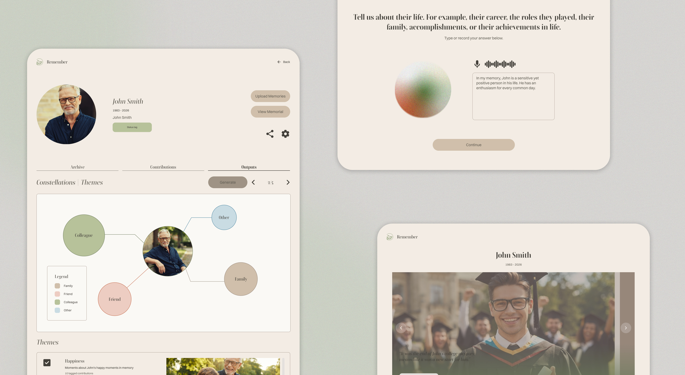
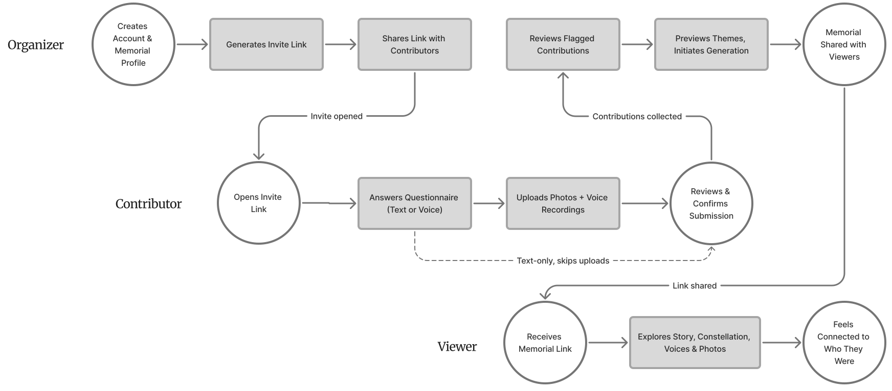
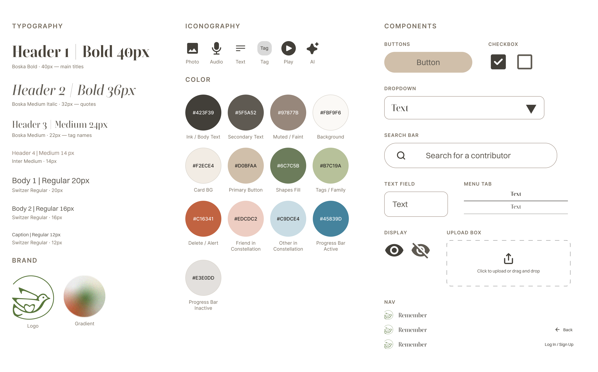
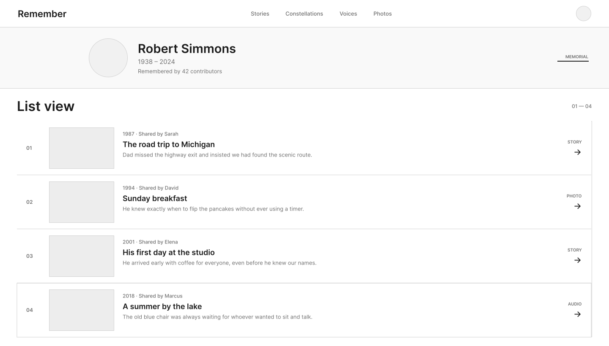
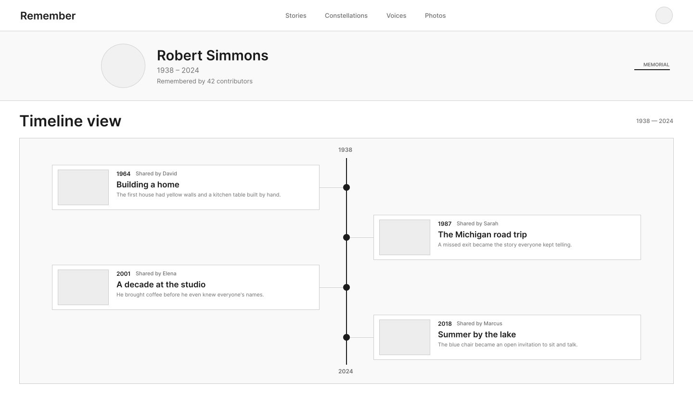

Organizer
Closest to the loss
A family member or close friend, often still standing closest to it. What they fear is an output that comes back hollow or generic, technology reducing someone real to something soulless.
A digital memorial that gathers scattered memories of one person into a single place to remember them.

Remember turns memories held by many people into one memorial for the person who has died. One person — the organizer — creates the memorial and invites family and friends to contribute. Contributors respond to a guided interview rather than facing a blank page, sharing stories, voice recordings, and photos.
Those fragments are then synthesized into a single memorial that anyone can visit, moving between a slideshow, a constellation of themes and relationships, recorded voices, and a photo archive. The organizer manages it all from one dashboard, from the first invitation to the finished memorial.
When someone dies, no one holds the whole picture. A friend remembers a conversation. A cousin has the only photo from that summer. A sibling saved a voicemail and can't bring themselves to delete it. Each piece is real. Each one is partial.
The tools families reach for aren't built to hold any of this. Group chats bury a story under the next message. Shared drives turn a life into a folder of filenames. Social media flattens condolences and memories into the same scroll, then moves on.
We began by treating this as a collection problem: build a good way to gather memories from a lot of people. But collection turned out to be the easy half. The moment we imagined fifty submissions arriving — different voices, different lengths, some a paragraph, some a single sentence — the real question surfaced.
Synthesizing many people's fragments into something coherent is the kind of hard AI is good at, provided it stays invisible. The harder question turned out to be what that synthesis should actually look like once someone opens it — so we turned to a synthesis of grief forums, obituaries, eulogies, and bereavement studies to find out.
People said vague praise disappears — but the oddly specific detail, like a receipt kept from a decades-old return, stays forever.
Contributors said hearing a story about the deceased they'd never heard before felt less like new information and more like a gift.
People said the questions they wish they'd asked weren't the big ones — favorite soda, who taught them to drive — the small stuff they assumed they'd always have time to ask.
These three findings come from a secondary research synthesis of grief forums, obituaries, eulogies, and bereavement studies, not from interviews the team conducted directly.
We ran a handful of voice-of-customer interviews. What did most of the work was defining, precisely, who the product had to serve at once. The organizer needs power without being crushed by process. The contributor needs an opening low-friction enough to actually use. The viewer needs to feel something before they need to understand anything. This case follows two of those three threads: the organizer's dashboard, and what a viewer meets in the output layer.
A family member or close friend, often still standing closest to it. What they fear is an output that comes back hollow or generic, technology reducing someone real to something soulless.
Family, friends, colleagues, community. They could be any age, any background, brought in by a link. They want to feel like what they share actually matters and feel connected with the other contributors.
Anyone the organizer chooses to share the finished memorial with. They came to feel connected to who the person was. The bar is an experience that feels worthy of the person being honored.
This chart shows how the organizer's, contributor's, and viewer's actions stay three separate flows that only meet at a few key moments across the product. The work ahead follows the organizer's and viewer's paths specifically.

We settled on the style before a single screen was designed. The brief to ourselves was one sentence: no technological feeling, even though this is an AI-powered product. Most products built around AI signal it visually — cool blues, gradients, glows. We went the other way and built the system on a warm, physical palette. Nothing on screen suggests a system is running.

This was the question I owned, and the obvious answers were all wrong. Two structures kept coming up early on, and I mocked up both before setting them aside. Neither one could hold what a memorial actually needed to do.


It preserves every submission exactly as it arrived, but it does not decide what matters. Fifty entries read like fifty entries, not like a picture of one person.
It puts a life in order, but grief does not move in order. People reach for a habit or a joke first, not the year it happened.
The insight that resolved it: there is no single right way to remember someone, and no point at which you are finished. Grief research backed this up again and again. Different people needed different things from the same memorial, sometimes at different times.
So the output layer consists of four ways, and what separates them is how much the system interferes. Someone who wants to be carried starts at one end. Someone who doesn't want a machine's version of their father goes straight to the other. No tab claims to be the complete one.
A slideshow, each frame a photo paired with the quote or memory it belongs to, sequenced to read as one narrative. The first thing a visitor meets — no decision required, it simply plays at their own pace.
Synthesized memories rendered as connected points of light rather than paragraphs. Each theme carries a short summary and the real contributor quotes it was built from — never AI prose standing alone.
Every recording, kept as sound first, with a transcript underneath for anyone who wants to read instead of listen. Some things should not be transcribed-only.
Every submitted photo, sorted into albums the AI names from what's actually in them, not by upload date — then browsable chronologically once you're inside one.
The organizer meets the same four in the dashboard. Once the memorial is built, organizing and previewing it happens through the identical surface a visitor will see. There is no backstage version where the memorial is really managed. The person who built it sees what everyone else sees.
The constellation reframes a life as something you wander rather than something you finish reading — closer to how remembering actually works.
The constellation rebuild is what I took from this project. The original version had no usability problem. It was smooth, familiar, and borrowed from a pattern people already understood. It was wrong anyway, because a pattern carries meaning independent of whether it functions — and the meaning that Apple Photos carries is the system did this for you. In a grief context, that is the one message the product could not send.
The "no technological feeling" rule started as a visual instruction in the design language. After the critique, it became something bigger: a rule about authorship, about who gets credit for a feeling.
The harder half of designing with AI wasn't capability. It was tone.
The prototype is live, but it has never been in front of a grieving family. The first thing I would test is not usability. It's whether the constellation is meaningful or merely pretty — a distinction that a task-completion metric cannot detect and that only a real visitor can answer. I would run moderated sessions with actual viewers and organizers, and watch for one thing: whether someone moving through the constellation is remembering a person, or looking at a visualization.
The research also points further out than launch: a memorial's highest emotional value isn't the week it's built, it's years later, once someone's own memory of a voice or a face has started to soften and Remember is the thing that still has it exactly. The real product has to be built for that later user, still able to accept new contributions, still worth opening long after it was first finished.